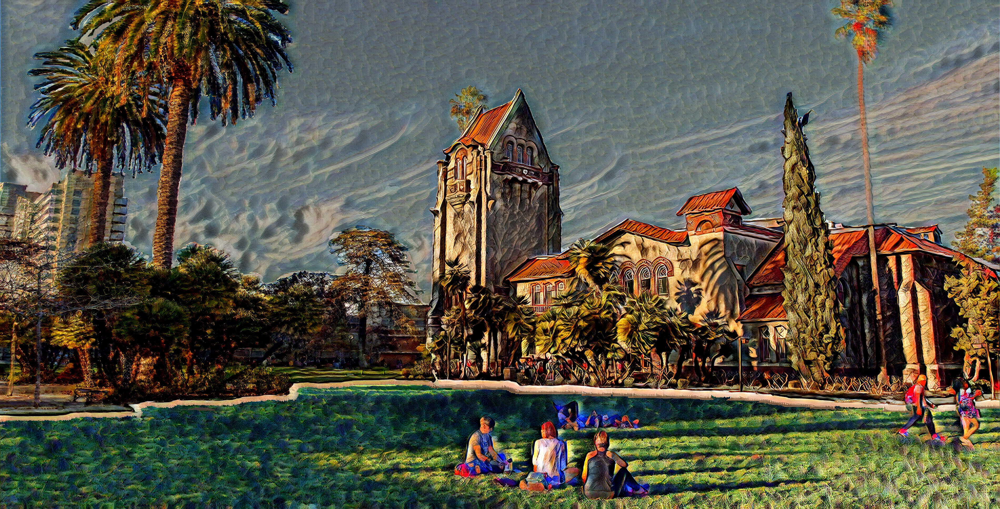
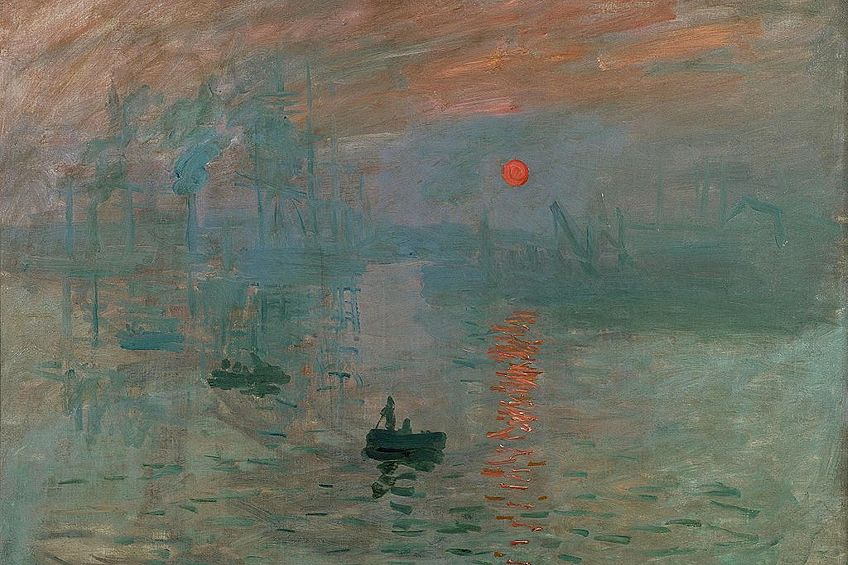
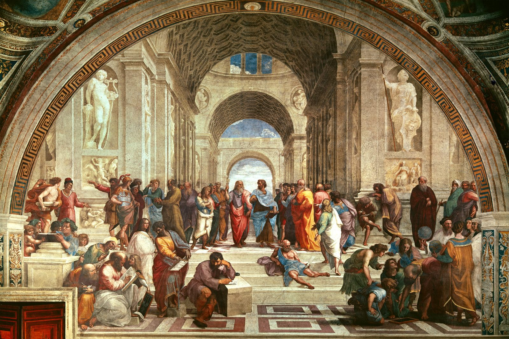
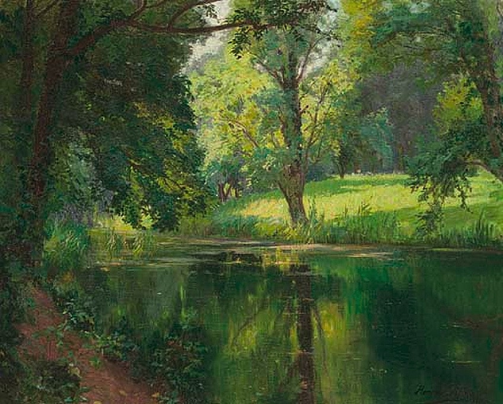
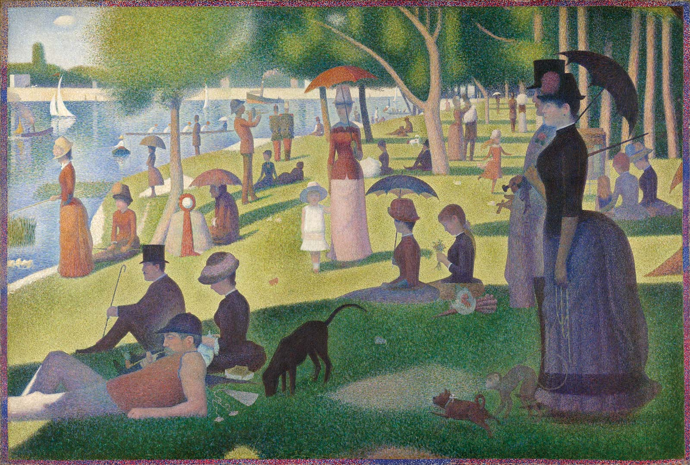

RunwayML: Art Periods in One
For this project, I wanted to establish a picture that possesses a few art period elements in one piece. I saved a picture of the SJSU tower and combined elements from the art periods: Renaissance, Impressionism, Naturalism, and Pointilism and implemented them into the SJSU tower image. Each feature of the SJSU tower image represents a different art period as I used the machine learning system RunwayML to stylize that element of the image. As I do spend most of my time learning in the Art Building here at SJSU, I believe it is important to recognize art itself. The purpose of this project was to display how art has changed and evolved and I thought it would be cool for it to be shown in one-whole image.

Original image of San Jose State University (Photogrpah by James Tensuan, '15 Journalism).

Final outcome.

Impression, Sunrise (1872) by Claude Monet represents the sky (Impressionism).

School of Athens (1509-1511) by Raphael represents the SJSU tower building (Renaissance).

A Quiet Stretch of the River (late 1800s-early 1900s) by Henri Biva represents the palm trees and building on the left side of the image (Naturalism).

A Sunday Afternoon on the Island of La Grande Jatte (1884-1886) created by George Seurat represents the students sitting on the lawn (Pointilism).